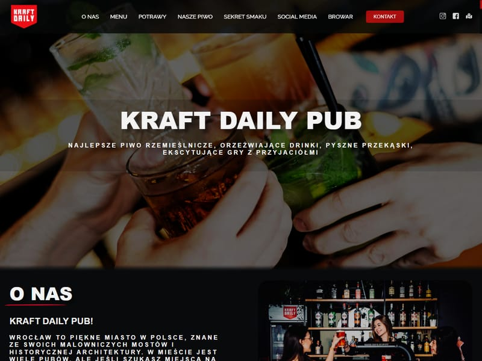

Objaw
Strona ładuje się długo, formularz nie wysyła danych, checkout gubi sprzedaż albo aplikacja przestaje być przewidywalna po kolejnej zmianie.
Wolne ładowanie, błędy po aktualizacji, znikające zapytania, problemy na mobile albo niepewność po zmianach w kodzie.
Najpierw znajduję źródło problemu. Potem bezpiecznie przywracam sprawność i mierzę efekt.
Strona ładuje się długo, formularz nie wysyła danych, checkout gubi sprzedaż albo aplikacja przestaje być przewidywalna po kolejnej zmianie.
Sprawdzam metryki, logi, kod, konfigurację, zależności i krytyczne ścieżki użytkownika. Dzięki temu nie „optymalizujemy” przypadkowego fragmentu.
Rozdzielam objawy od przyczyn, wskazuję ryzyka i układam kolejność działań, która ma sens dla użytkownika oraz biznesu.
Przed zmianą zabezpieczamy środowisko i krytyczne dane. Wdrażam poprawki tak, aby nie tworzyć kolejnego problemu obok starego.
Optymalizuję zasoby, renderowanie, obrazy, skrypty i konfigurację tam, gdzie pomiar pokazuje realne wąskie gardło.
Porządkuję konflikty, błędy integracji, zależności i scenariusze awaryjne, które blokują konwersję albo pracę zespołu.
Weryfikuję kluczowe ścieżki po zmianach, dokumentuję wynik i wskazuję, co warto obserwować lub rozwinąć w kolejnym etapie.
Diagnoza techniczna od 300 PLN netto, optymalizacja od 800 PLN netto. Dokładny zakres ustalam po rozpoznaniu źródła problemu.

Najpierw ustalamy, co użytkownik ma zrobić i gdzie ten proces się psuje. Dopiero potem wybieramy zmianę: może to być konfiguracja, kod, zasób zewnętrzny, baza danych albo większa decyzja architektoniczna.
Zbieramy objaw, adres, technologię, dostępne dane i wpływ na użytkowników. Następnie weryfikuję, gdzie leży źródło problemu.
Ustalamy kopię zapasową, ryzyka oraz kolejność działań. Gdy problem jest pilny, najpierw ograniczamy jego skutki.
Wdrażam uzgodnione zmiany i sprawdzam je w scenariuszach, które są ważne dla odwiedzających, klientów albo zespołu.
Porównujemy efekt z punktem wyjścia. Dostajesz podsumowanie zmian oraz uczciwą rekomendację: obserwować, rozwijać czy przebudować.
Właściwa, gdy źródło błędu jest ograniczone, a system po poprawce może dalej działać bez zwiększania długu technicznego.
Jeśli ograniczenia wynikają z architektury, zależności lub procesu, opiszę sensowny etap modernizacji zamiast maskować objawy kolejną szybką poprawką.
Napisz, co nie działa, od kiedy i jaki ma to wpływ na użytkowników lub firmę. Jeśli masz adres strony, błędy z konsoli albo wynik testu — dołącz je do wiadomości.
Masz problem do rozwiązania? Wyślij sygnał.
Zacznijmy od faktów, nie od zgadywania.
Nie. WordPress jest jednym z możliwych środowisk, ale pracuję też nad innymi stronami i aplikacjami webowymi. Najpierw oceniam technologię, dostęp i objaw problemu.
Tak, jeśli po analizie da się bezpiecznie przejąć zakres. Przed zmianami ustalam dostęp, kopię zapasową, ryzyko i sposób weryfikacji.
Nie składam uniwersalnych obietnic bez diagnozy. Na wynik wpływają między innymi hosting, treści, skrypty zewnętrzne i architektura. Ustalamy mierzalny cel adekwatny do systemu.
Diagnoza zaczyna się od 300 PLN netto, a optymalizacja od 800 PLN netto. Dokładny zakres zależy od źródła problemu oraz tego, czy potrzebna jest szybka naprawa, głębsza optymalizacja czy modernizacja.
Podsumowanie wykonanych zmian, wynik pomiarów po wdrożeniu oraz rekomendację kolejnego kroku, jeśli problem wymaga większego etapu.
Czekam na dane. Opisz parametry misji, a otrzymasz strategię techniczną.
Ostatnia aktualizacja: Styczeń 2026
Dane z formularza są wykorzystywane wyłącznie do obsługi Twojego zapytania. Administratorem danych jest Paweł Dominiak, działający pod nazwą DominDev; kontakt: contact@domindev.com.
Przetwarzane mogą być dane podane w formularzu: imię lub nazwa, adres e-mail, treść wiadomości, wybrana usługa, budżet i zgoda RODO. Służą one do udzielenia odpowiedzi, obsługi projektu i zapewnienia bezpieczeństwa formularza.
Infrastruktura strony i ochrona przed nadużyciami korzystają z Cloudflare, a wysyłka formularza z Resend. Masz prawo dostępu do danych, ich sprostowania, usunięcia, ograniczenia przetwarzania, sprzeciwu i cofnięcia zgody. W sprawach danych napisz na contact@domindev.com.
Strona nie używa marketingowych cookies ani profilowania. Może korzystać wyłącznie z technicznych mechanizmów niezbędnych do działania oraz anonimowej, zbiorczej statystyki odwiedzin Cloudflare Web Analytics.